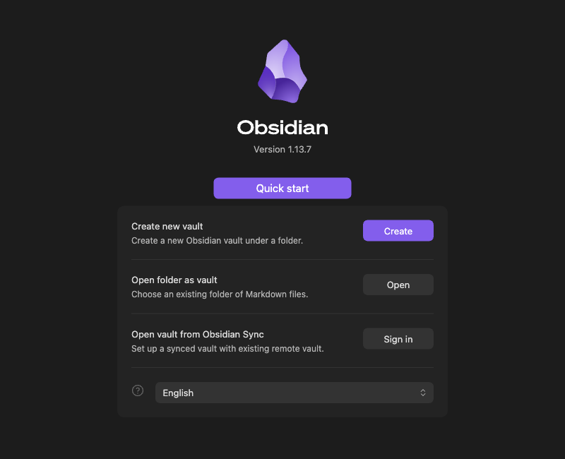
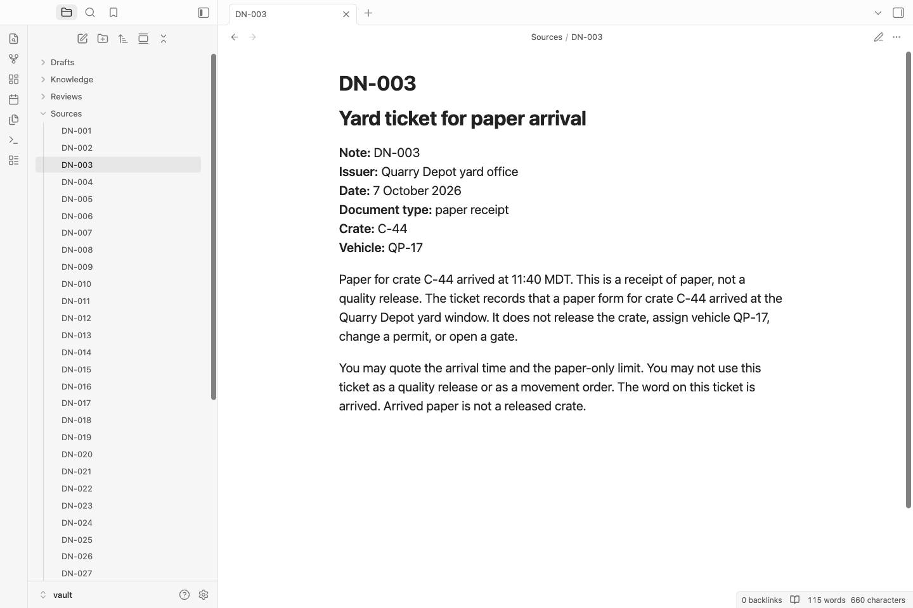
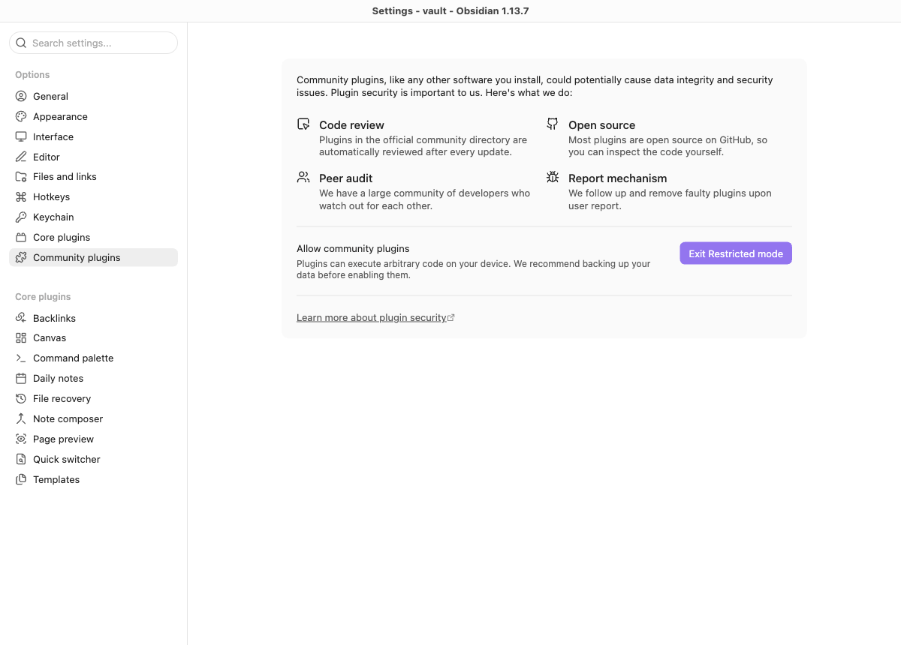
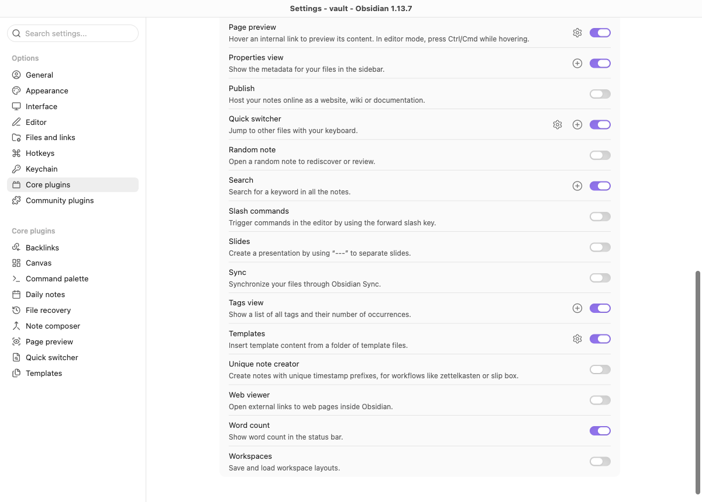

Module 2 · Build and control a reusable second brain
After this assignment you can Direct AI judgments into reusable linked notes under a saved rule, check their source support, and use feedback to improve a new revision while preserving the first.
6 steps. Mark each step done as you finish it; progress is saved on this device.
Start one run to have the AI judge source-backed claims, turn those judgments into linked notes, and answer from a saved copy of the notes. Check the answer-to-source trail in Obsidian, then give source-backed feedback for a new revision. The AI stages pass their work forward automatically; your inspection does not pause them.
This is an ungraded exercise with fictional Ledger Pike paperwork. Your result is for class use only. It doesn't authorize a release, vehicle assignment, permit approval, or real movement.
On this page
The route
Plan for about three hours (a rough estimate). Most of the time is spent in Obsidian inspecting the generated notes and records and writing one short feedback note.
Prepare the vault and run the AI sequence. Trace its answers back to the sources, check that retrieval stops when the saved rule is missing, and restore the rule. Then give feedback, run a new revision, and compare the notes and answers without overwriting the first version.
Prepare and open your vault
This step makes a fresh work folder and opens its vault in Obsidian. A vault is the folder of Markdown notes that Obsidian opens. Use the Python, OMP, and Obsidian you verified in Module 00. On WSL, open the Linux-home vault with Linux Obsidian under WSLg.
The block sets four variables. R is your course checkout, PY is Python 3.12 or newer, W is this attempt's work folder, and E holds its run evidence. If your checkout isn't in Documents, change only the R line. Keep using the same terminal so the variables stay set.
Terminal: Bash or zsh, ordinary user.
R="$HOME/Documents/AIHB_OCT_2026"
PY="$(for candidate in python3.12 python3 python; do "$candidate" -c 'import sys; sys.exit(1) if sys.version_info < (3, 12) else print(sys.executable)' 2>/dev/null && break; done)"
RUN="$("$PY" -c 'import datetime, uuid; print(datetime.datetime.now(datetime.timezone.utc).strftime("%Y%m%dT%H%M%SZ") + "-" + uuid.uuid4().hex)')"
W="$HOME/course-evidence/module02-$RUN/work"
E="$HOME/course-evidence/module02-$RUN/evidence"
printf '%s\n' "R=$R" "PY=$PY" "W=$W" "E=$E"
"$PY" "$R/shared/prepare_work.py" 02 "$W"
Terminal: native PowerShell, ordinary user.
$R = "$HOME\Documents\AIHB_OCT_2026"
$PY = $null
foreach ($candidate in @("python3.12", "python3", "python")) {
try {
$executable = (Get-Command $candidate -CommandType Application -ErrorAction Stop).Source
& $executable -c "import sys; exit(0 if sys.version_info >= (3,12) else 1)" *> $null
if ($LASTEXITCODE -eq 0) { $PY = $executable; break }
} catch {}
}
if (-not $PY) { throw 'No Python 3.12+ found; return to setup.' }
$RUN = (Get-Date).ToUniversalTime().ToString("yyyyMMddTHHmmssZ") + "-" + [guid]::NewGuid().ToString("N")
$W = "$HOME\course-evidence\module02-$RUN\work"
$E = "$HOME\course-evidence\module02-$RUN\evidence"
Write-Output "R=$R" "PY=$PY" "W=$W" "E=$E"
& $PY "$R/shared/prepare_work.py" 02 $W
if ($LASTEXITCODE -ne 0) { throw 'Preparation held; preserve the attempt and read the named condition.' }
Expected: The four variables print, and preparation reports a fresh work copy.
Stop: Python isn't found, a path is wrong, or preparation exits with a nonzero code.
Recovery: Fix the missing prerequisite with Module 00. If the destination already exists, keep it and run the block again for a new attempt. Don't merge attempts or copy files from an old vault.
Now initialize the vault. This creates the Sources folder with the forty unchanged DN notes plus the supporting folders and an empty index.
Terminal: Bash or zsh, ordinary user, same window.
"$PY" "$W/scripts/second_brain.py" initialize --work "$W"
Terminal: native PowerShell, ordinary user, same window.
& $PY "$W/scripts/second_brain.py" initialize --work $W
if ($LASTEXITCODE -ne 0) { throw 'Initialization held; read the named file or condition.' }
Expected: PASS: initialize. W/vault has Sources with DN-001 through DN-040, Knowledge, Reviews folders, and MOC.md. Feedback.md is present for later edits.
Stop: HOLD, because the vault already exists, a source is missing, or a path is unsafe.
Recovery: Keep that attempt, fix the named problem, and start a fresh work copy with the first block.
Open the vault in Obsidian
In Obsidian's vault chooser, click Open beside Open folder as vault, then select the printed W path followed by vault. Don't choose Create, and don't open the checkout or the cold folder. If another vault is already open, use Manage vaults from the vault-name menu at the bottom left to reach the chooser.


Click MOC in the left file explorer. MOC is the index the helper updates after each revision. It starts with only a title. Obsidian hides the .md extension.
Expand Sources and open a DN note. You can also press Ctrl+O on Windows and Linux or Command+O on macOS and type its ID. The breadcrumb above the note shows its folder. Leave source text unchanged.


Keep plugins restricted and Sync off
Your vault stays on your laptop. Click the Settings gear at the bottom left, then Community plugins. If the button says Exit Restricted mode, Restricted mode is already on, so leave it alone. If community plugins are enabled, click Turn on Restricted mode.


Select Core plugins, find Sync, and turn it off if it's on. Don't sign in or connect a remote vault. Close Settings.


| Location | What belongs there | Who changes it |
|---|---|---|
vault/Sources |
Original DN evidence | Keep unchanged |
vault/Knowledge (per revision) |
AI-generated notes for that revision | Helper only; read-only for inspection |
vault/Reviews (per-revision files) |
AI decision record and answers with citations | Helper only; readable |
vault/MOC.md |
Latest navigation index pointing to the current revision's notes | Helper only |
vault/Feedback.md |
Your short natural-language direction for the next revision | You, in Obsidian |
cold, identities, E/, runs/ (per revision) |
Frozen snapshots, manifests, and evidence | Helper only; keep unchanged |
Screen the sources and load the saved rule
Three controls stand between the paperwork and the model. The file screen flags instruction-like lines in a local check but does not filter the packet; all forty sources reach the judge as data under the saved rule and read boundary. The saved instruction is a rule file the launcher loads into every session before it contacts the model; this rule says to treat the paperwork as data, never as orders. The read root is the only folder a session may open. You still supply the feedback that shapes the next revision.
Open W/shared/controls/SAVED_INSTRUCTION.md in a text viewer to see the rule every session loads. Don't edit it, and don't copy it into the vault.
Run the file screen
The screen runs on your computer and doesn't call the model. Run it on a clean ticket, three notes with hostile instructions, and a file that doesn't exist.
Terminal: Bash or zsh, ordinary user, same window.
for note in DN-003 DN-014 DN-015 DN-016 DN-000; do
"$PY" "$W/shared/case/guard.py" "$W/shared/case/$note.md"
printf '%s exit=%s\n' "$note" "$?"
done
Terminal: native PowerShell, ordinary user, same window.
foreach ($note in @("DN-003", "DN-014", "DN-015", "DN-016", "DN-000")) {
& $PY "$W/shared/case/guard.py" "$W/shared/case/$note.md"
$screenExit = $LASTEXITCODE
Write-Output "$note exit=$screenExit"
}
Expected: DN-003 prints PASS source-as-data and exit=0. DN-014, DN-015, and DN-016 print HOLD hostile-instruction and exit=1. DN-000 prints HOLD: missing input and exit=1.
Stop: Any other result.
Recovery: Check the paths and that guard.py is unchanged. Don't create DN-000 or edit the screen to make it pass.
A pass on the screen does not make the facts in that file true, and a flag does not make the useful facts false. The screen also can't see text you paste into a chat; that is one reason the saved rule is loaded before every model contact.
Run v1: automatic judge, build, and retrieve
Before the first run, make sure OPENROUTER_API_KEY is exported in this terminal (use the hidden-input steps from your Module 00 platform guide and credentials). The launcher pins openrouter/anthropic/claude-sonnet-4.6. Each complete run uses three paid sessions; two complete runs use six.
The first AI session judges claims from a staged copy of all forty sources. The next session reads those judgments and groups them into linked Knowledge notes. The helper saves a frozen snapshot—an unchanged copy of the notes and their index—and a fresh AI session answers from that snapshot alone. Every session loads the saved rule. The sequence continues without asking you to approve individual notes.
Terminal: Bash or zsh, ordinary user, same window.
"$PY" "$W/scripts/second_brain.py" run --work "$W" --revision v1 --runner "$R/shared/run_omp.py" --evidence "$E/v1"
Terminal: native PowerShell, ordinary user, same window.
& $PY "$W/scripts/second_brain.py" run --work $W --revision v1 --runner "$R/shared/run_omp.py" --evidence "$E/v1"
if ($LASTEXITCODE -ne 0) { throw 'Run held; preserve the evidence and read the named condition.' }
Expected: The command exits 0. The E/v1 directory contains subdirectories judge/, build/, and retrieve/ with the actual policy.json, guard.jsonl, result.json, and response for each stage. New files appear under Knowledge/v1, Reviews/v1-judgments.md and Reviews/v1-answers.md are written, MOC.md is updated, and cold/v1 plus identities/v1.json record the frozen state. Open Reviews/v1-answers.md to see the three answers with citations.
Stop: A HOLD. A setup problem (exit 2 and no evidence) is usually a missing key or rule; fix and start a new attempt. A later structural or evidence failure keeps the attempt; use the named condition to recover.
Recovery: A finished run consumes this revision and evidence path. Start a new W/E pair for another attempt. The helper does not retry a paid run automatically.
Inspect the trace from answer to source
Open the vault in Obsidian. The generated files are ready after the run completes.
- Open
Reviews/v1-answers.md. For each of Q1, Q2, and Q3 (supported or unsupported): - If the answer lists a Knowledge citation, follow the Knowledge note link to the versioned note. The note shows Claim, Limits and conflicts, Evidence, Related. Use the judgment link in the answer (heading like #JG-xxx in the revision's judgments file) to reach the exact entry.
- For unsupported answers with zero citations (no Knowledge link emitted), skip links and instead open the revision's judgments file Coverage section and the original Sources/DN files to identify which required part of the question remains unsupported and to check any partial support against judgments/Coverage/sources. Semantic incompleteness can be described in the answer prose.
- Where a source link is present, open the linked original
Sources/DN-xxx.md. Verify the excerpt matches the source exactly and that the treatment and limits are carried forward into the answer.
Explicitly check:
- The answer text includes or respects the limits recorded in the judgment.
- Find a claim marked
unresolvedorexclude, if the AI recorded one. An excluded claim must not appear in Knowledge. An unresolved claim may share a note with supported claims, but the answer must not present that uncertainty as an established fact. Check the actual cited excerpt, not just the note's ID.
Exit 0 means the AI stages completed and the mechanical checks passed. It does not establish that the claims are true or correctly interpreted. Your source inspection supplies that judgment; none of the three AI stages waits for your approval.
You can trace any part of an answer back through its Knowledge note and the judgment entry to the exact passage in the original source. The frozen copy in cold/v1 is what any later retrieval will read. The live Sources folder remains available for your reference.
Prove the saved rule is required (missing-rule negative on v1)
A retrieval without the saved instruction must stop before it contacts the model or creates an evidence directory. Temporarily rename the rule, attempt retrieval from v1, then restore the same bytes. This check makes no paid call.
Terminal: Bash or zsh, ordinary user, same window.
(
rule="$W/shared/controls/SAVED_INSTRUCTION.md"
held="$W/shared/controls/SAVED_INSTRUCTION.md.held"
negative="$E/recheck-missing-rule"
if [ ! -f "$rule" ] || [ -e "$held" ] || [ -L "$held" ] || [ -e "$negative" ] || [ -L "$negative" ]; then
printf '%s\n' 'HOLD: missing rule or existing negative/held path; preserve it and inspect.'
exit 1
fi
mv "$rule" "$held" || exit 1
trap 'mv "$held" "$rule"' EXIT
"$PY" "$W/scripts/second_brain.py" retrieve --work "$W" --revision v1 --runner "$R/shared/run_omp.py" --evidence "$negative"
negative_exit=$?
if [ "$negative_exit" -ne 2 ] || [ -e "$negative" ] || [ -L "$negative" ]; then
printf '%s\n' 'HOLD: expected exit 2 and no evidence directory; stop and preserve observations.'
exit 1
fi
printf '%s\n' 'Missing-rule prerequisite stopped with exit 2; no evidence directory created.'
)
Terminal: native PowerShell, ordinary user, same window.
$rule = "$W/shared/controls/SAVED_INSTRUCTION.md"
$held = "$W/shared/controls/SAVED_INSTRUCTION.md.held"
$negative = "$E/recheck-missing-rule"
if (-not (Test-Path -LiteralPath $rule -PathType Leaf) -or (Test-Path -LiteralPath $held) -or (Test-Path -LiteralPath $negative)) {
throw 'Missing rule or existing negative/held path; preserve it and inspect.'
}
Move-Item -LiteralPath $rule -Destination $held -ErrorAction Stop
try {
& $PY "$W/scripts/second_brain.py" retrieve --work $W --revision v1 --runner "$R/shared/run_omp.py" --evidence $negative
$negativeExit = $LASTEXITCODE
if ($negativeExit -ne 2 -or (Test-Path -LiteralPath $negative)) {
throw 'Expected exit 2 and no evidence directory; stop and preserve observations.'
}
Write-Output 'Missing-rule prerequisite stopped with exit 2; no evidence directory created.'
} finally {
Move-Item -LiteralPath $held -Destination $rule -ErrorAction Stop
}
Expected: HOLD: missing saved instruction: naming the rule, then the message that exit 2 occurred and no evidence directory was created. SAVED_INSTRUCTION.md is restored by the trap/finally.
Stop: Any other exit code, a new evidence directory, or the rule still named .held.
Recovery: If the block was interrupted, rename the .held file back without overwriting anything else. Don't edit the rule content.
Also run the v1 check here (after the negative test on v1, before feedback/v2):
Terminal: Bash or zsh, ordinary user, same window.
"$PY" "$W/scripts/second_brain.py" check --work "$W" --revision v1
Terminal: native PowerShell, ordinary user, same window.
& $PY "$W/scripts/second_brain.py" check --work $W --revision v1
if ($LASTEXITCODE -ne 0) { throw 'v1 identity held; preserve and inspect the named path.' }
Expected: PASS: check for v1.
Stop: HOLD or a nonzero exit, including a missing or changed saved rule after restoration.
Recovery: If the rule is still named .held, restore that same file without overwriting another file, then repeat this local check. For a changed snapshot, source, or receipt, preserve the named files and investigate the reported mismatch; don't edit generated records to make the check pass. Don't start v2 while the v1 identity check is failing.
Supply feedback and run v2
After you have inspected the v1 answers, judgments, and sources, edit Feedback.md (it lives at the top level of the vault). The file is ordinary Markdown. Write one to three short, source-backed sentences that name the focal note (the KB ID you will pass with --focus-note) and a decisive DN source from the judgments. State the limitation or added qualification you observed and the effect you want on the next revision's answers.
Use the direction in the file itself. Cite an actual KB note ID and DN source you inspected. If the v1 answers are already correct, you can still record a substantive added qualification from a source. Do not invent a defect. Do not edit the generated Knowledge notes, MOC, or judgment files. The helper freezes the bytes of Feedback.md that the v2 run receives.
Now run the revision. The --previous points at the v1 identity, --focus-note tells the builder which note the feedback most directly affects, and --feedback supplies your plain-language direction.
Note: Replace KB-001 with the actual focal note ID (e.g. KB-003) that you named in the Feedback.md you wrote. The --focus-note tells the helper which generated note the feedback most directly affects.
Terminal: Bash or zsh, ordinary user, same window.
"$PY" "$W/scripts/second_brain.py" run --work "$W" --revision v2 --previous v1 --focus-note KB-001 --feedback "$W/vault/Feedback.md" --runner "$R/shared/run_omp.py" --evidence "$E/v2"
Terminal: native PowerShell, ordinary user, same window.
& $PY "$W/scripts/second_brain.py" run --work $W --revision v2 --previous v1 --focus-note KB-001 --feedback "$W/vault/Feedback.md" --runner "$R/shared/run_omp.py" --evidence "$E/v2"
if ($LASTEXITCODE -ne 0) { throw 'Revision run held; preserve the evidence and inspect the named condition.' }
Expected: PASS: run --revision v2 and exit 0. Knowledge/v2, Reviews/v2-judgments.md, Reviews/v2-answers.md, cold/v2, and identities/v2.json appear. The v1 files remain unchanged. The focal note changed and the fresh session read it; compare the answers with your feedback and sources to decide whether the change is an improvement.
Stop: A HOLD naming a missing previous identity, an unchanged focal note when one was required, or a feedback file problem.
Recovery: Keep the held attempt and its evidence. If v1 still passes its check, stay in the same W. If the HOLD names the focal note or feedback, correct the note ID or revise Feedback.md before another paid run. Use a fresh revision name and evidence path, such as v2b and $E/v2b, while retaining --previous v1. Use that revision name in later checks and comparisons. If there is no successful v1, prepare a fresh work copy.
Post-v2 checks
Re-run the v1 check after the v2 run to prove the earlier snapshot is preserved across the revision, then run the v2 check. Terminal: Bash or zsh, ordinary user, same window.
"$PY" "$W/scripts/second_brain.py" check --work "$W" --revision v1
"$PY" "$W/scripts/second_brain.py" check --work "$W" --revision v2
Terminal: native PowerShell, ordinary user, same window.
& $PY "$W/scripts/second_brain.py" check --work $W --revision v1
if ($LASTEXITCODE -ne 0) { throw 'v1 identity held; preserve and inspect the named path.' }
& $PY "$W/scripts/second_brain.py" check --work $W --revision v2
if ($LASTEXITCODE -ne 0) { throw 'v2 identity held; preserve and inspect the named path.' }
Expected: PASS: check for v1 (re-run) and for v2. (If you branched to a different successful revision name such as v2b after a HOLD, substitute that name in these commands and the Expected.)
Stop: A HOLD naming a file that changed, appeared, or disappeared inside the frozen copy.
Recovery: Keep the snapshot as it is. Report exactly what the check names. The fingerprint match shows the bytes are stable; it does not claim the notes are true.
Compare revisions and see the proof in the run records
After the v2 run, compare the material answers explicitly:
Open Reviews/v1-answers.md and Reviews/v2-answers.md. For Q1, Q2, and Q3, compare the status, answer text, citations, and limits. Does the change follow your feedback and the source evidence? An unchanged correct answer is an honest result; a changed answer is not automatically better.
Open the evidence folder for a retrieve or the judge/build/retrieve subfolders under a run (E/v1 or E/v2). You do not need to copy anything.
- Look in
guard.jsonlfor aninstruction_loadedline that appears before the first provider request. This shows the saved rule was in place. - In each phase's
policy.json,work_rootnames the only folder that session could read. Judge readsruns/<revision>/inputs/judge: copies of the forty sources, plus the previous judgments, previous build, and feedback for a revision. Build readsruns/<revision>/inputs/build: the new judgments and, for a revision, the previous build. Retrieval reads onlycold/<revision>, containing the index and Knowledge notes. The only allowed tool iscourse_read. - Compare the tool calls in
events.jsonlwith the decisions and execution records inguard.jsonl. A successful read, a missing file, and a blocked call are different outcomes. If no call was attempted, the run does not prove that it would have been blocked. Describe only the records you actually see.
Open the revision's answers file. Follow its Knowledge, judgment, and Source links. Check whether each cited excerpt matches the original passage and whether that passage supports the answer with its stated limits.
Knowledge notes carry source excerpts and AI judgments; the saved instruction contains governing rules, not source evidence. A recorded read and a matching excerpt do not establish that the model interpreted the source correctly. Decide that by inspecting the source yourself. Keep your vault, both frozen copies, the Feedback.md you wrote, and the run evidence. The frozen folders and identity records stay outside the editable vault and are never overwritten by later revisions.